Проблема № 1
Первое, что бросилось в глаза при знакомстве с Potion Craft, — это пропорциональность размера объектов: огромная ступка и пестик в сравнении с остальными приборами.
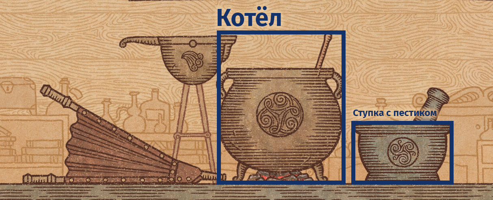
Проблема становится отчётливее, если бы в игре было видно, что этими предметами пользуются люди:
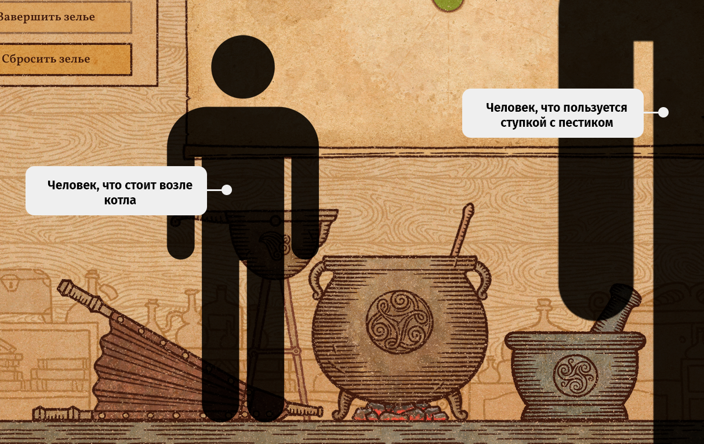
Известно о множестве примеров пренебрежения реализмом в угоду игрового процесса (вспомнить ту же рубку дерева голой рукой в Minecraft), и в большинстве случаев они действительно являются интересным решением, но всё же не стоит забывать, что
они пагубно влияют на эффект погружения. Стоит игроку лишь задуматься о том, насколько огромна эта ступка в сравнении с котлом; осознать, что только измельчённый им ингредиент в ступке занимает такое же пространство в огромном котле — сразу
возникает диссонанс, и игра воспринимается не так как до этого.
Я предложу два решения этой проблемы:
Простое решение
Можно сначала отделить поверхности, на которых располагаются предметы, а при перемещении объектов менять их размер в зависимости от дальности в пространстве игрового поля. Получается, размер любого объекта будет динамически изменяться от условия — ближе ли он к центру комнаты (там, где стоит котёл) или же к столу (там, где располагается ступка с пестиком).
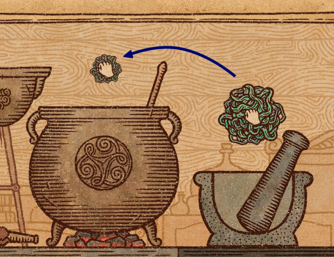
Сложное решение
Есть более масштабный в плане изменений вариант — это создать несколько экранов и дать игроку возможность легко переключаться между ними. Каждый из экранов представляет из себя определённую часть алхимической комнаты, а предметы в них будут масштабироваться в зависимости от перспективы. Само переключение во время варки работает по принципу «Pie menu»: путём подведения курсора к специальному интерфейсу и поворота мышки в сторону нужного игроку варианта. В этом случае игрок может легко сменить экран во время создания зелья даже с игредиентом в руке, из-за чего процесс варки зелья не будет прерываться, оставаясь прежним, как и в существующей версии игры.
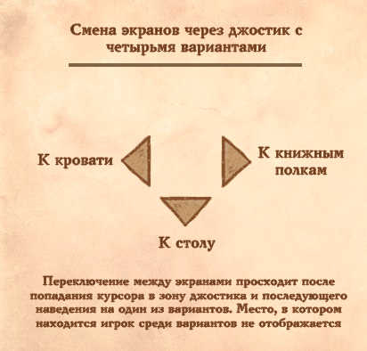
Преимущества сложного решения
1 Увеличение геймплейного разнообразия
Хоть подобное нововведение требует кардинального изменения существующих наработок, оно бы позволило увеличивать игровые возможности в создании зелий (например добавляя их с обновлениями). То есть помимо существующих инструментов (котёл, ступка) добавлять новые (примеры: перегонный куб, зачаровывающий аппарат), а в случае нехватки места для них — вводить дополнительные экраны, т.е места в комнате создания зелий. Таким образом, возникает простор для добавления игрового функционала, что значительно поможет разнообразить игру.
2 Поддержка ощущения развития у игрока
Также, помимо разнообразия, добавление новых экранов позволило бы создать вектор постепенного развития: игрок сможет тратить заработанные деньги на постоянное расширение своей лавки и покупку нового инструментария для создания более сложных зелий. Это станет отличным мотиватором для игры и фактором удержания игрока.
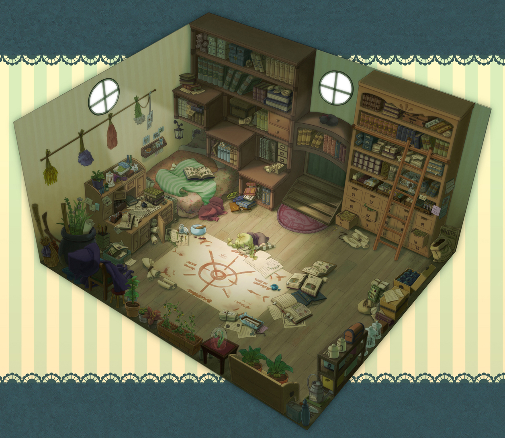
3 Подкрепление эффекта погружения
За счёт добавления новых экранов можно добиться у игрока ощущения нахождения в реальной комнате. Помочь добиться этого эффекта может переработка действий нынешнего интерфейса, что раньше задействовали кнопки. Например, начало нового дня может происходить после щелчка по кровати (которой, кстати, можно реализовать возможность улучшения, и это будет давать какие-то игровые преимущества). Такой UX подход: замена кнопок на реальные объекты, поддержит иллюзию того, как игрок действительно осуществляет действие в игре, т.е. спит и таким образом пропускает ночь.
Примечание
Занимаясь разработкой интерфейса, я так же, как и во всём, стараюсь придерживаваться комплексного подхода. Нынешний интерфейс Potion Craft приятен на вид и достаточно удобен, но это не значит, что он будет таковым с каждым последующим этапом разработки. Ведь стоит основываться не только на видимых данных, но и предполагаемых.
Говоря иначе, нынешний прототип игры не раскрывает всех поставленных финальных целей, а значит какие-либо предлагаемые мной изменения не могут быть однозначными. Фигурируя данными о том, каким должна быть финальная версия проекта, я бы возможно предложил пересмотреть нынешнюю концепцию и переработать большую часть существующего интерфейса. Как и есть вариант, что нынешняя концепция уже удовлетворяет поставленным задачам и для улучшения качества интерфейса требуется лишь правильная полировка: отрегулировать размер элементов, их расположение и предусмотреть, как без труда и глобальных изменений интерфейса вводить в игру что-то новое.
Поэтому в этом вопросе я рассматриваю лишь некоторые недочёты интерфейса, а не конкретные минусы его системы.
Проблема № 2
Нынешнее окно диалогов смотрится лаконично из-за своей минималистичности, но стоит признать, что текст в прямоугольниках смотрится топорно. Окна можно модернизировать не только в плане дизайна, но и с целью улучшения его восприятия. Ранее я уже говорил о том, что обычные блоки с текстом способны быть крайне гибким инструментом и о подкреплении их визуальными образами, что способствуют потреблять игроку информацию более быстро и точно.
Применяя это знание с диалоговыми окнами, можно добавить иконки в варианты ответов, а блоки с ними стилизовать на подобие окон мессенджера:
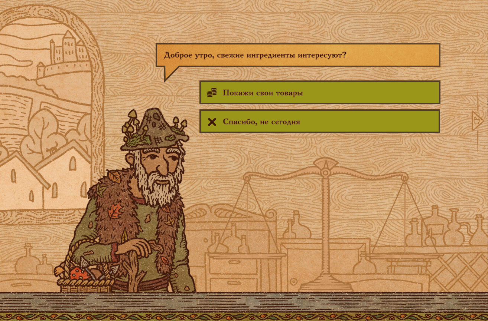
В этом случае такое на первый взгляд незначительное улучшение диалоговых окон значительно повышает юзабилити, т.е. удобство использования. Почти каждый современный человек, что будет играть в Potion Craft, ранее общался в мессенджерах и ему будет привычнее усваивать информацию именно таким образом. Иконки же ускорят восприятие каждого отдельного варианта и просто будут эстетично приятны. Также они помогут уменьшить шанс мисскликов по выбранному игроком варианту, а значит, хоть и минимально, но уменьшат потенциально негативный игровой опыт. Всё строится из мелочей.
 Update
UpdateСам момент был придуман до выхода нового билда в Steam:
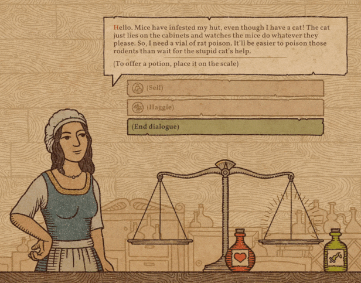
Проблема № 3
Двигаясь по пути улучшения юзабилити, я не могу не упомянуть об одном из главных правил хорошего UX — значение каждой кнопки должно быть ясно до её нажатия. В этом правиле почти нет исключений по причине того, что даже вроде как безобидные кнопки должны обладать «отдачей». Такой интерфейс становится отзывчивым и дружественным. Игрок бессознательно ощущает комфорт пользуясь подобным интерфейсом, а это в конечном итоге сказывается на его мнении об игре.
Кнопки перехода в другие комнаты хоть и пытаются объяснить свою функцию иконками, игрок все равно не поймёт, что конкретно они делают пока не нажмёт на них. Поэтому их можно сопроводить быстро возникающим описанием при наведении:
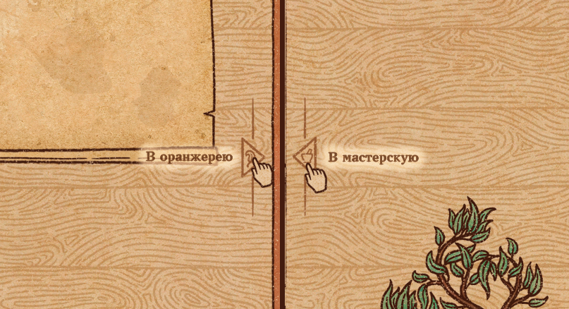
Мной было замечено, что в игре недостаточно ингредиентов, которые имеют путь движения вправо и вверх. По этой причине в качестве нового ингредиента я решил предложить вариант, который старается устранить этот дефицит:
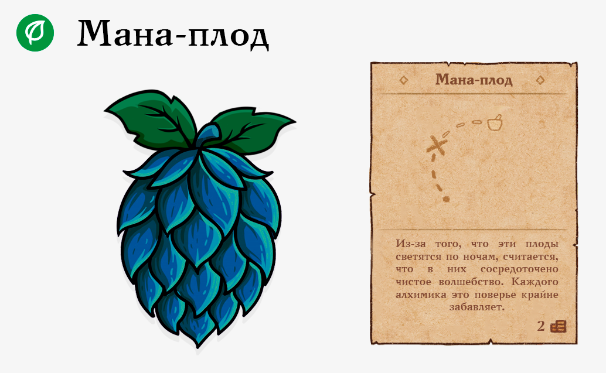
Изучив те типы зелий, которые находятся в этой области карты (в правой верхней стороне), стало понятно, что ингредиент должен обладать наличием более выраженных магических свойств по сравнению с другими растениями. Свойство свечения в темноте хоть и имеет научное обоснование, для человека незнакомого с современной наукой может показаться проявлением чуда. Траектория пути ингредиента выбрана таким образом, что использование двух таких мана-плодов будет приводить к созданию зелья маны.
Задачей для художника будет стилистически адаптировать рисунок выше в тему игры. В качестве референса задействован хмель. Всё отличие лишь в том, что он перекрашен в более синеватый оттенок:
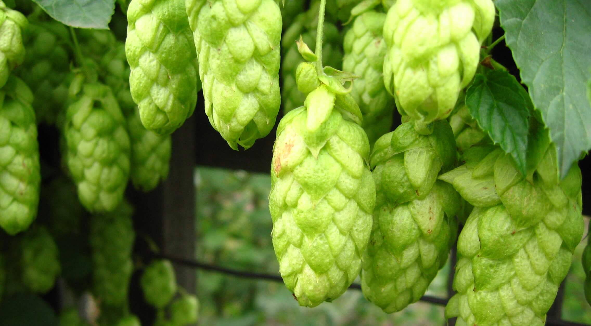
Идеи об ингредиентах
Внедрение в игру опасных ингредиентов (наподобие дьявольских силков или мандрагоры из Гарри Поттера), что требуют от игрока некоторых навыков и возможно специального оборудования для их первоначальной обработки с целью дальнейшего использования.
Примеры: Раскалённые ингредиенты могут требовать специальных магических перчаток, что игрок добывает через череду сюжетных квестов; Ингредиенты, что способны причинить вред или те, что представляют опасность для жизни, можно было бы обезвреживать через изучение специализированных заклинаний. В дальнейшем, в лейт-гейме, опасные свойства каких-то ингредиентов можно было бы изымать при помощи специального оборудования (а эти свойства могли бы становится каким-то ресурсом в игре, например являться теми же уникальными ингредиентами, или, если идти дальше, собираться через особое устройство в искусственные ингредиенты с вручную отобранными игроком свойствами)
Цель идеи: Увеличить время создания сложных зелий начиная с середины игры. Это приведёт к увеличению времени прохождения и захвату игрока желанием развивать персонажа для создания интересных зелий.
Прежде чем презентовать предлагаемого мной персонажа стоит сделать некоторое отступление чтобы более подробно описать его цель в игре:
О гильдиях
Внедрение в игру гильдий мне показалось крайне интересным и перспективным. Ведь при помощи этого нововведения игроку можно предоставить выбор между сюжетным развитием, вдобавок дав возможность отыгрыша характера своего персонажа. Каждая из гильдий может олицетворять определённый типаж игрока. Одним из хороших примеров того, как именно можно реализовать выбор гильдии по ходу игры, является Papers, Please: в ней игроку предоставляется возможность осуществлять определённые действия с целью достичь конкретной концовки. Например, чтобы получить концовку «Member of the Order», нужно выполнять специальные задания ордена Звезды (EZIC).
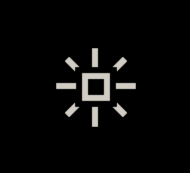
В случае с Potion Craft реализация может оказаться следующей: если в игре существует несколько гильдий, то каждая из них будет иметь свой балльный счётчик репутации — определённое действие в сторону гильдии будет давать баллы в сторону конкретной гильдии, приближая игрока к моменту вступления в неё. Попадание в какую-либо гильдию сулит свои преимущества в виде определённых игровых бонусов и уникальной для гильдии сюжетной линии.
Считаю, что в игре крайне уместно смотрелась бы гильдия, что связана с преступлениями. Некоторое подобие слияния Гильдии Воров и Тёмного Братства из TES V: Skyrim. Не будем придумывать ей однозначного названия, пускай она пока по тексту будет именоваться Тёмная гильдия. Вокруг этой гильдии можно было бы создать множество необычных историй, связанных с убийствами и преступлениями. Продемонстрировать игроку за счёт них негативную сторону игрового мира.
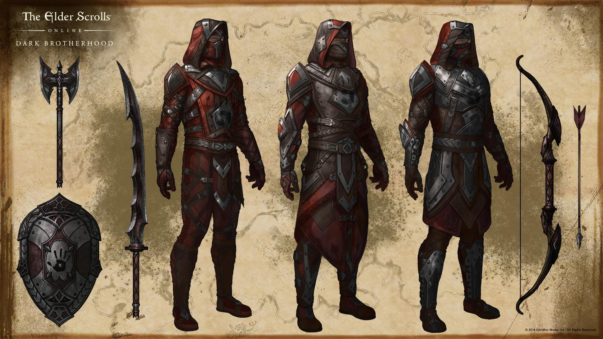
Более подробно, что из себя представляет Тёмная гильдия описано в Вопросе 2.6. Сейчас же остановимся на персонаже, что будет первое время играть роль некого входного билета для игрока в Тёмную гильдию.
Эдью Тьюст
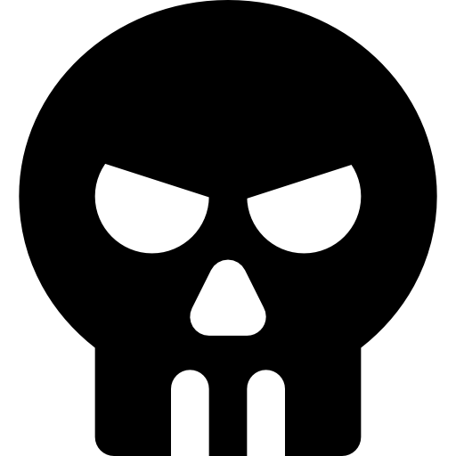
Новобранец Тёмной гильдииПредыстория
Презентуемый персонаж для игры — Эдью, связан с Тёмной гильдией, в ней он вынужденный новобранец. Вынужденным он является потому, что случайно стал свидетелем убийства, которое осуществлял другой член Тёмной гильдии. Тёмной гильдии нельзя было убивать Эдью, потому что он является сыном человека, крайне близкого к самой Тёмной гильдии. Его убийство бы привело к лишению многих связей в городе, и поэтому Эдью завербовали в качестве рекрута.
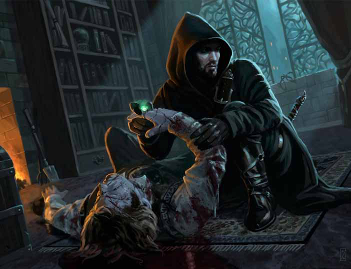
Первым заданием Эдью после его первичной боевой подготовки станет убийство другого человека. Таким образом Тёмная гильдия хочет связать Эдью, ведь он совершит то же преступление, свидетелем которого ранее стал сам, и получается он уже не сможет покинуть гильдию: он будет связан кровью.
Покинув убежище Тёмной гильдии с мешком на голове, Эдью был брошен на произвол судьбы: его задача — убить цель за 15 дней и сделать это любой ценой. По истечении 15 дней, если цель будет не убита, — будет убит Тьюст. Он также будет убит и в случае, если попытается кому-то что-то рассказать. Таков обычай большинства новобранцев Тёмной гильдии, а ради традиций в гильдии готовы пожертвовать связями. По крайней мере так сказали Эдью.
Из-за того, что Эдью из семьи дворянинов, он обладает повышенным чувством собственной важности: ранее при других членах гильдии он вел себя уверенно и всячески показывал, что готов на убийство. Но Эдью обманывая других одновременно обманывал и себя, ведь в душе он понимает, что на убийство решиться не готов.
Поэтому, прикинув наиболее простой способ совершения преступления и наименее грязный (по его мнению), Эдью решил отравить свою цель.
 Первое появление и роль в игре
Первое появление и роль в игре
В игре Эдью выступает в качестве одного из клиентов, он зайдёт в алхимическую лавку, чтобы купить яд для убийства. Эдью будет одет в повседневную форму Тёмной гильдии, с виду её можно принять за вполне обычную повседневную форму достаточного человека тех времён. Разница лишь в том, что у ней есть капюшон. При определённом наклоне головы капюшон закрывает верхнюю часть лица и позволяет скрывать свою личность.
Референсы одежды
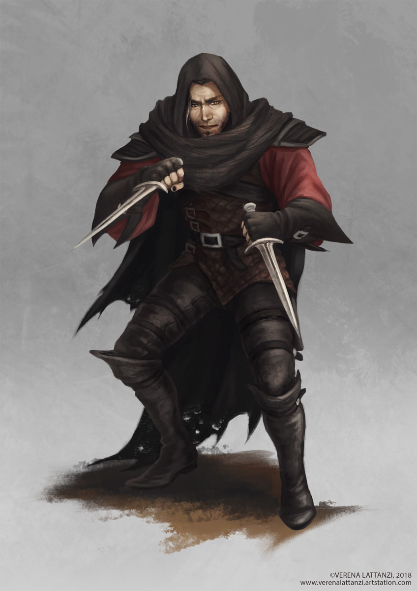
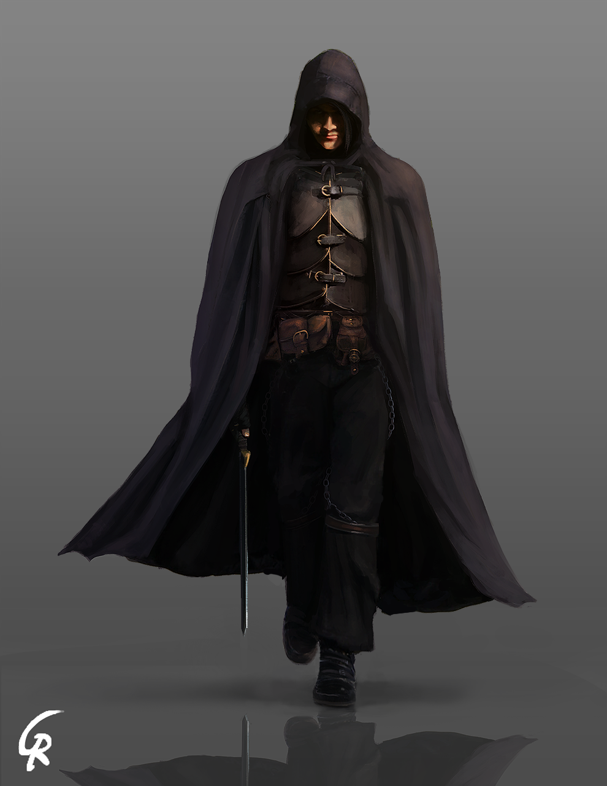
По ходу заказа зелья отравления Эдью в разговоре будет вести себя крайне неуверенно, дав игроку сразу раскусить, что с этим персонажем явно что-то нечисто. Его поведение и мимика всячески демонстрируют нерешительность. Он боится, что покупка яда в дальнейшем может вывести на него после совершения убийства.
В Papers Please есть крайне меметичный персонаж — Джорджи Костава. По ходу прохождения он не раз пытается пройти через пропускной пункт используя очевидно поддельные документы.
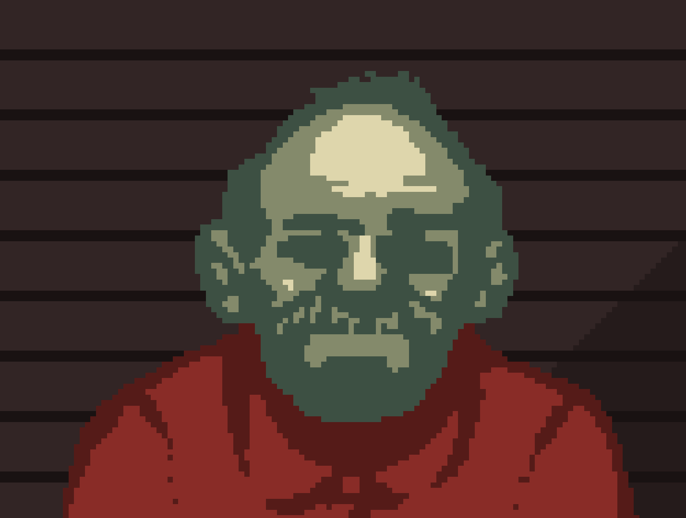
Этот персонаж стал запоминающимся именно из-за того, что выделялся своим забавным поведением и абсурдностью на фоне остальных нелегалов, которые вели себя серьёзнее и ошибку в документах у которых найти не так легко.
Эдью, как и Джорджи Костава, будет выделяться на фоне остальных клиентов, покажется игроку очевидно что-то скрывающим мальчуганом. С самим диалогом мы познакомимся детальнее в Вопросе 2.6.
Задание для художника
Цель: нарисовать Эдью Тьюста, новобранца Тёмной Гильдии
Вид игрового объекта: клиент алхимической лавки
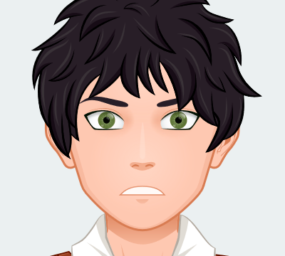
Описание:
Юноша 17 лет, среднего роста, светлая кожа
Голова: густые тёмные волосы, зелёные глаза, миловидное лицо европеоидного типа
Эмоция: неуверенность, нерешительность
Одежда:
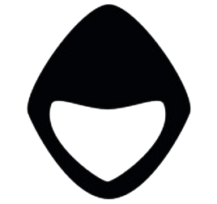
Тканевый чёрный капюшон в виде накидки с жёлтой каймой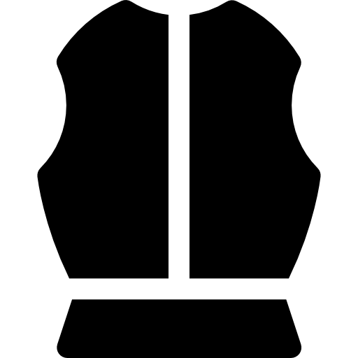
Кожаный нагрудник с ремнями надетый на рубаху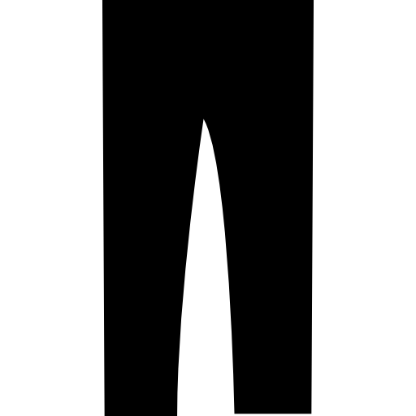
Тканевые опоясанные брюки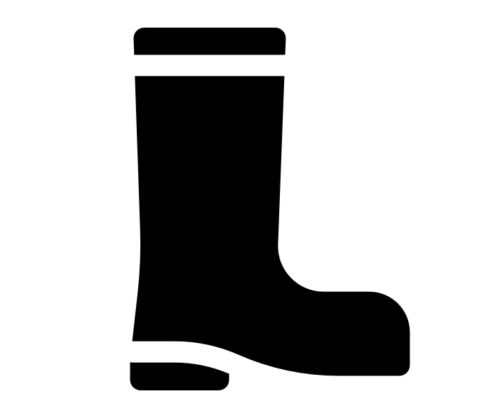
Кожаные сапоги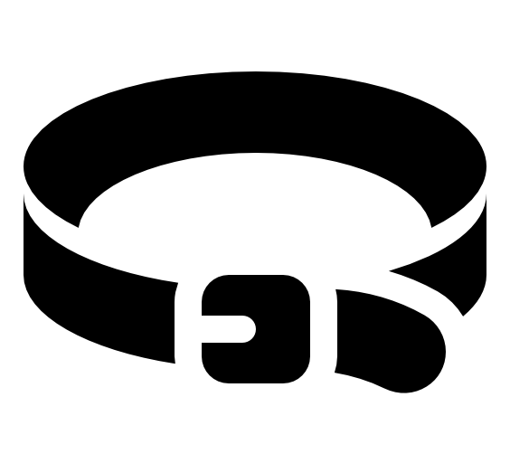
Кожанный ремень с мешком из плотной тканиКожаные перчатки с полуоткрытыми пальцами

 Кликните для увеличения
Кликните для увеличения